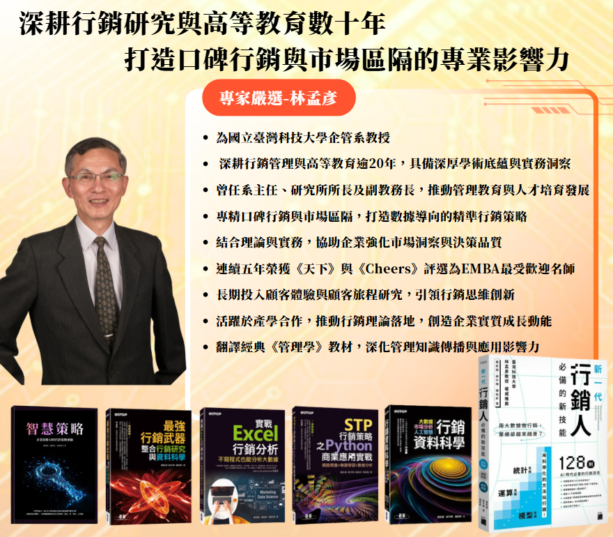
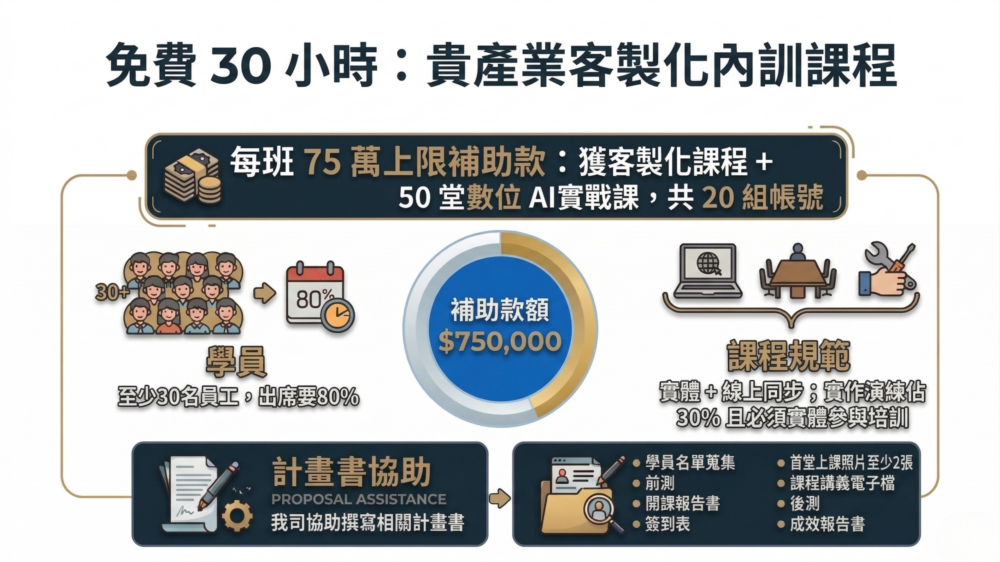
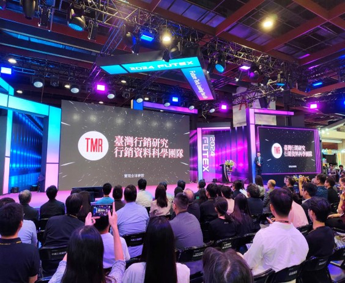
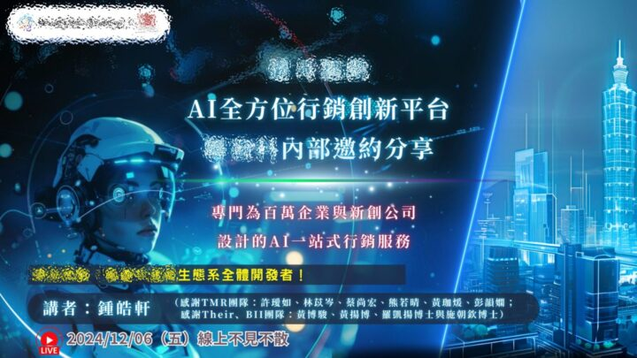
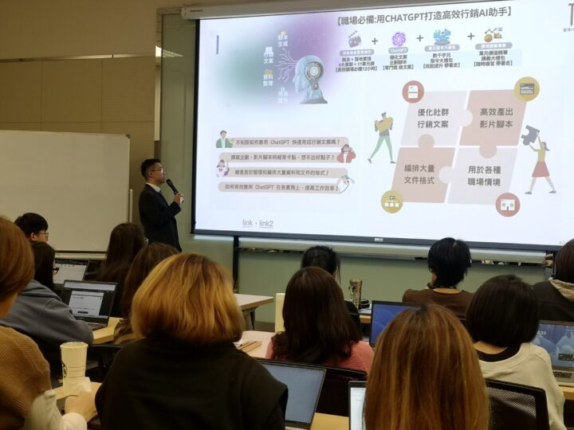
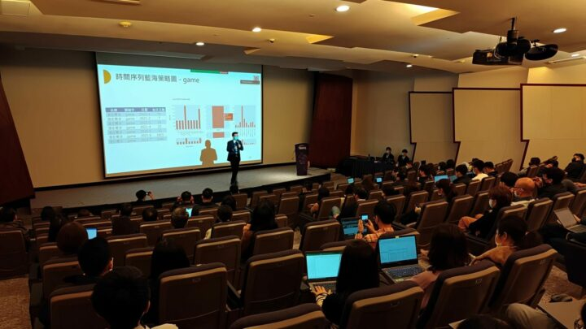

講師團隊
認識我們的頂尖團隊
由業界專家引領團隊親自顧問與授課，帶領您掌握電商與零售業 AI 賦能的未來商機。
講師介紹

國立臺灣科技大學教授 – 林孟彥
深耕行銷管理與市場研究數十年，專精口碑行銷與市場區隔，結合理論與數據分析，協助企業提升市場洞察與決策品質。
臺灣行銷研究 – 鍾皓軒
台大工工/台科大工管雙博士班，聯發科 GenAI 合作夥伴，榮獲國科會 GenAI Stars 頂尖 AI 團隊殊榮。出版 5 本大數據與 AI 行銷專書。
關於臺灣行銷研究 (TMR)
我們致力於幫助服務業企業導入 AI 技術，提升營收與營運效率。與聯發科合作，為企業提供最前沿的 AI 解決方案與培訓。
補助方案
歡迎與我們一同申請！
計畫書等相關行政事宜，我們將一同協助，此外我們將帶給您超值客製化課程與 50 門 AI 數位課程。

服務照片錦集
Top3 科技業 × 台灣行銷 - 內訓服務照片錦集
實際服務現場紀錄



